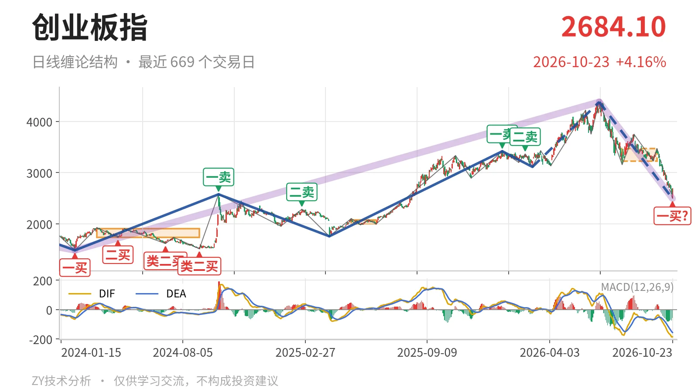
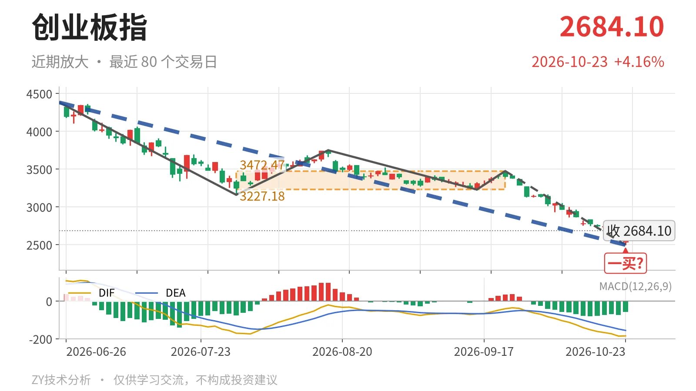

创业板指｜跌破中枢16.8%，2494点一买待定

最近日线中枢 3227.18—3472.47点，收盘位于中枢之下
一句话：6月25日以来下跌段延续，已跌破最近中枢下沿，10月23日一买暂定。
📉 走势结构：上涨转入下跌段，6月25日以来未止跌
日线线段层面，6月25日至10月23日的下跌段从4380.41点到2494.22点，跌43.1%，还在延续。更大级别上，2024年2月5日至2026年6月25日的上涨走势尚未走完，但6月25日之后未能续创新高，反而走出深幅下跌段，说明当前已进入该上涨结构后的回落段。3月9日至6月25日的上涨线段在4380.41点后没有延续出新高，反而被6月25日以来的下跌段打回，日线结构不是中枢震荡，而是上涨转下跌。

📦 中枢与位置：收盘低于最近中枢下沿16.8%
7月30日至9月22日中枢为3227.18—3472.47点，中轴3349.83点，还在构筑。最新收盘2684.10点低于下沿约16.8%，已完全落在中枢下方。这个中枢中轴较2025年5月14日至2025年6月23日中枢的2036.94点上移到3349.83点，属于中枢上移；但价格没有守住下沿，说明上移结构已被短期下跌破坏。只要仍在3227点下方，该中枢对价格形成压制。
🧭 买卖点：10月23日一买暂定，前期买点级别已降
日线笔级别结构上只有一个未完成的买点：10月23日2494.22点的暂定一买，所在笔9月22日至10月23日的下跌笔没有结束，这个一买会随这一笔延续而变化。若后续再创2494.22点新低，它就只是更小级别一买。此前2月25日3363.18点的二卖之后被6月25日4380.41点新高改写，只对应较小级别；3月9日3111.88点的线段三买也在本次下跌中被跌穿，其结构作用仅限3月9日至6月25日那段上涨。

⚖️ 背驰：绿柱面积收缩，DIF同步新低，背驰不标准
关键的力度对比在6月25日至7月30日与9月22日至10月23日两段同向下跌笔。后者从3472.47点跌至2494.22点，价格创调整新低，绿柱面积却由1837缩到842，DIF低点由-171.1降至-186.3。面积收缩说明下跌动能减弱，但DIF同步走低，因此不是标准的“新低不新弱”。10月23日暂定一买所对应的下跌笔还在延续，背驰只能以这段仍在延续的走势为准，力度背离还不够纯粹。
🔎 关键位置观察：反抽3227点决定三卖或中枢扩展
9月22日以来的下跌笔若不继续向下延伸，反抽若回不到3227点上方，对7月30日至9月22日中枢构成回抽不进中枢，结构上构成三卖。重新站上3227点，则6月25日以来的下跌更可能只是中枢扩展，下跌段才有被终结的初步条件。下方若再失守2494点，暂定一买失去日线笔意义，下方可看2022年4月27日至2023年8月4日线段中枢上沿2282.65点附近。结构偏弱，弱在价格跌破最近日线中枢下沿且尚无回抽。
⚠️ 本文为基于公开行情数据的缠论技术结构记录，由程序自动计算并生成，仅供学习交流，不构成任何投资建议。市场有风险，投资需谨慎。